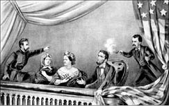
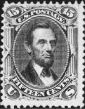
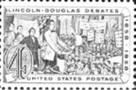
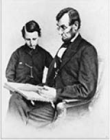

Abraham Lincoln, Fotoğrafçı Alexander Gardner, 1863
Abraham Lincoln (1809-1865)
“Köle olmayacağım gibi, köle sahibi de olmayacağım. işte bu benim demokrasi fikrimdir.”
ABD’nin, hayatı kâbuslarla dolu 16. başkanı.
12 Şubat 1809’da tek odalı bir kulübede dünyaya geldi. Dokuz yaşında annesini bir salgın hastalıkta kaybetti.
Hiç hoşuna gitmemesine rağmen, çok küçük yaştan itibaren, yirmi yaşına kadar, yaptığı işler hep fizik gücüne dayanıyordu. Okula düzenli olarak gidemedi. Ama kendi çabasıyla okuma yazma öğrendi.
Çıkık elmacık kemikleri, dağınık saçları ve uzun bacakları genç kızların alay konusuydu.
On dokuz yaşına geldiğinde, kendisine on yıldır yarı annelik yapan ablasının doğum esnasında hayatını kaybetmesi Lincoln’ü çok etkiledi.
Paçaları çoraplarının üzerine kıvrılmış vaziyette bir salda çalışan Lincoln’e bir gün bir köylü “Paran olsa ne yapmak isterdin?” diye sorduğunda Lincoln “Hukuk okumak isterdim” cevabını vererek ideallerinin ne kadar yüksek olduğunu gösterir.
Daha sonra bir dükkânda satış görevlisi olarak çalıştığı işini bırakıp bir ortakla kendi dükkânını açar. Fakat kısa bir süre sonra iflas eder, ortağı ölür ve tüm borç Lincoln’e kalır, borcunu ödemesi on beş yılını alır.
Ancak dürüstlüğü sayesinde Temsilciler Meclisi’ne seçilir. Bu sırada ödünç aldığı hukuk kitapları sayesinde hayalini kurduğu avukatlık sınavlarını verir.
Platonik olarak âşık olduğu çok yakın bir arkadaşı aniden öldüğünde ruhsal bunalıma giren Lincoln’ün yanında üzüntüsünü paylaşabileceği bir yakını bile yoktur.
Bu olaydan beş yıl sonra bazı sorunları olan Mary Ann Todd ile evlenir. Ancak evlilik öncesinde kendisini eşinin ailesine yakıştıramadığından bir ruhsal bunalım daha yaşar. Borç ödemeye devam ettiklerinden ancak bir han odasında kalırlar. 1847-1849 yılları arasında Kongre üyesi olur.
Bu yıllarda ekonomik olarak rahatlarlar, 1850’de dört yaşındaki oğlunu kaybeder. Beş yıllık avukatlığın ardından Senato seçimlerine katılır. Seçimler sırasında kölelik aleyhine yaptığı konuşma, seçimleri kaybetmesine rağmen asla unutulmaz:
“Yozlaşma alanındaki gelişmemiz oldukça hızlı görünüyor bana, millet olarak, ‘Tüm insanlar eşit yaratılmıştır’ diye başladık, şimdi bu cümleyi uygulamada şöyle okuyoruz:
‘Tüm insanlar eşit yaratılmıştır, siyahlar, yabancılar ve Katolikler hariç.’ İş buraya kadar gelince ben özgürlüğü sevme numarası yapmayan bir ülkeye göç etmeyi tercih ederim, mesela Rusya gibi despotluğun sade bir şekilde, aşağılık bir ikiyüzlülük alaşımı olmaksızın var olduğu bir yere olabilir.”
Ve o güne kadar çok sayıda Kongre ve Senato üyeliğini kaybeden Lincoln 1861’de ABD başkanı olur. Ancak başkanlığı döneminde ülke ikiye bölünür ve dört yıl süren kuzey-güney savaşları başlar. Talihsizlikler Lincoln’ün yakasını bırakmak bilmez. 1862’de on iki yaşındaki oğlunu da kaybeder. Önceki çocuğunda olduğu gibi bunda da eşi tamamen yıkılır.
1865’te bir Cuma gecesi Shakespeare’in bir oyununu izlemeye giden Lincoln bir suikast sonucu başından vurularak öldürülür.
Mary Ann kocasını kaybetmeyi bir türlü kabullenemez ve akli dengesi bozulduğundan sanatoryuma gönderilir.

Lincoln suikastı, Baskıresim: Currier&Ives, 1865
Abraham Lincoln “köleliği kaldıran başkan” olarak biliniyor. İngiliz büyüklerinin gömüldüğü Westminster mezarlığının karşısında bir heykeli var ve Amerikan kahramanı olarak anılıyor.
Politik karışıklıklara karşı Lincoln şöyle ilginç açıklamada bulunur:
“Karar halkındır. Ateşe sırt çevirmeyi tercih edip popolarını yakanlar, oturdukları zaman acısına da tahammül etmelidirler.”
Bir gazeteciyle röportajında, söz fiziksel görünümüne geldiğinde Lincoln şu cevabı vermiştir:
“Ben doğduğumda çok güzel, sarışın, mavi gözlü bir bebekmişim. Fakat hastanedeki hemşireler yanlışlık yapıp beni çirkin bir bebekle değiştirmiş.”
Abraham Lincoln, konuşmalarında yumuşak bir dil kullanır. Yanındakiler onu şöyle uyarır:
“Düşmanlarınızı yok etmek dururken, onlara dostça yaklaşmanızı anlamıyoruz.”
Amerika’nın 16. başkanı ise gülümseyerek şu cevabı verir:
“Düşmanlarımı dost etmekle onları zaten yok etmiş olmuyor muyum?”
Abraham Lincoln, bir kabine toplantısındadır. Bir bi-liminsanından bahsedilirken kabine üyelerinden biri onu övmeye başlar:
“Bizim neslimiz arasında bilgi kuyusuna onun kadar derin dalmış kimse yoktur!”
Bilgisinden çevresindekileri faydalandırmayı sevmeyen bu adamı tanıyan Lincoln, kabine üyesinin sözüne şöyle bir ekleme yapar:
“Ve onun kadar da kupkuru çıkan...”

Bir kadın başkan Lincoln’ün yanına gelerek emredici bir ses tonuyla, “Sayın Başkan! Oğlumu albaylığa yükseltmelisiniz” der. “Bunu bir lütuf olarak değil, bir hak olarak istiyorum. Büyükbabalarım İngilizlere karşı Lexington’da savaştı, amcam iç savaşta Bladensburg’tan kaçmayan tek insandı, babam New Orleans’ta çarpıştı ve kocam da Monterey’de öldü.”
Lincoln yavaşça yerinden doğrularak şöyle der:
“Bana göre sizin aileniz ülkemiz için yeterince hizmet etmiş. Artık başkalarına fırsat vermenin zamanı geldi!”
Yine bir gün Abraham Lincoln’e bir sohbet esnasında şu sorulur:
“Bir koyunun eğer kuyruğunu da bacak olarak sayarsanız kaç tane bacağı vardır?”
Lincoln: “Dört” diye cevap verir. “Bir kuyruğa bacak demek kuyruğu bacak yapmaz.”
Abraham Lincoln’e bir genç iş istemek için başvurur. Genç, isteğini dile getirmeden önce dedesinin, babasının, amcasının iç savaş sırasında gösterdikleri kahramanlıklardan, bu yolda hayatlarını bile hiç çekinmeden feda ettiklerinden bahseder.
Delikanlıyı sakin bir şekilde dinleyen Lincoln ona şöyle cevap verir:
“Evlat sen bana patatesi hatırlatıyorsun. Çünkü onun da en iyi kısmı, işe yarayan tarafı toprak altındadır.”
Başkanlık seçimlerinde rakibi Douglas, Lincoln’ü ikiyüzlülükle suçlar. Her fırsatta kendi görünüşüyle dalga geçen Lincoln, bir seçim konuşmasında rakibine şu cevabı verir:
”Eğer benim Bay Douglas’ın iddia ettiği gibi iki yüzüm olsaydı şu gördüğünüz yüzü hiç kullanır mıydım?”

Lincoln-Douglas tartışmaları anısına bir posta pulu.
Abraham Lincoln’den...
“Bir insanın karakterini test etmek isterseniz ona yetki verin.”
“Zaman alacak biliyorum, fakat eğer öğretebilirsen ona, Kazanılan bir liranın, bulunan beş liradan daha değerli olduğunu öğret. Kaybetmeyi öğrenmesini öğret ona ve hem de kazanmaktan neşe duymayı. Kıskançlıktan uzaklara yönelt onu. Eğer yapabilirsen,
Sessiz kahkahaların gizemini öğret ona.
Bırak erken öğrensin,
zorbaların görünüşte galip olduklarını.

Lincoln küçük oğlu Tad’e kitap okurken, Fotoğrafçı Mathew Brady, 1864
Eğer yapabilirsen,
ona kitapların mucizelerini öğret.
Fakat ona sessiz zamanlar da tanı.
Gökyüzündeki kuşların,
güneşin altındaki arıların,
ve yemyeşil yamaçtaki çiçeklerin
ebedi gizemini düşünebileceği.
Okulda hata yapmanın,
hile yapmaktan çok daha onurlu olduğunu öğret ona.
Ona kendi fikirlerine inanmasını öğret.
Herkes ona yanlış olduğunu söylediğinde dahi.
Tüm insanları dinlemesini öğret ona,
Fakat tüm söylediklerini
gerçeğin eleğinden geçirmesini,
ve sadece iyi olanları almasını da öğret.
Eğer yapabilirsen, üzüldüğünde bile
nasıl gülümseyeceğini öğret ona.
Gözyaşlarında hiçbir utanç olmadığını öğret.
Ona kuvvetini ve beynini
en yüksek fiyatı verene satmasını,
Fakat hiçbir zaman kalbi ve ruhuna
fiyat etiketi koymamasını öğret.
Uğultulu bir insan kalabalığına
kulaklarını tıkamasını öğret ona.
Ve eğer kendisinin haklı olduğuna inanıyorsa,
dimdik dikilip savaşmasını öğret.”
(Abraham Lincoln tarafından oğlunun öğretmenine yazılmış bir mektup.)